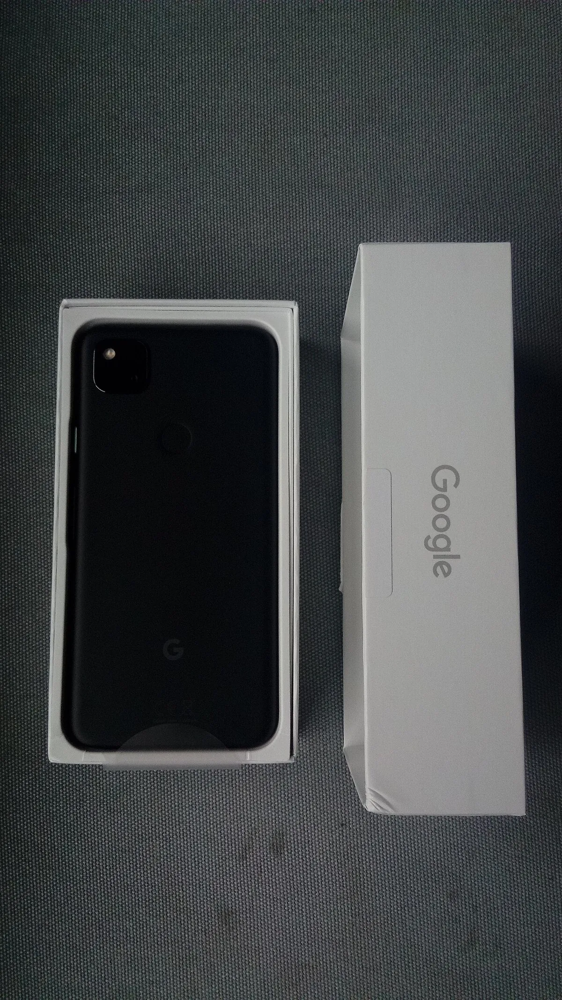

Stockage Google Photos plein ? L'astuce de l'ancien Pixel pour sauvegarder sans payer
« Espace de stockage saturé. » Le message finit par arriver chez presque tout le monde. Chaque compte Google comprend au départ 15 Go, partagés entre Gmail, Google Drive et Google Photos, et les photos sauvegardées depuis le 1er juin 2021 sont décomptées de cet espace. Il reste alors deux options connues : faire le ménage, ou payer un forfait Google One.
Il en existe une troisième, que peu de gens connaissent en dehors des forums de passionnés : confier la sauvegarde de ses photos à un ancien téléphone Pixel. Ce guide explique l'astuce depuis le début, ce que Google en dit lui-même, comment l'organiser avec votre téléphone habituel, et ce qu'elle ne fait pas.
L'astuce en deux phrases
Les Pixel de Google, du tout premier modèle jusqu'au Pixel 5, bénéficient d'une sauvegarde Google Photos sans frais et sans limite d'espace pour les photos et vidéos envoyées depuis le téléphone. On garde donc un ancien Pixel, connecté à son compte Google, et on fait passer ses photos par lui pour qu'elles soient sauvegardées sans entamer les 15 Go.
Ce que dit Google, et pourquoi ça fonctionne
Il ne s'agit ni d'un bug ni d'une manipulation douteuse. C'est écrit dans l'aide de Google en français : « Si vous possédez un téléphone Pixel 5 ou plus ancien, vous bénéficiez d'un espace de stockage illimité sans frais pour les photos et vidéos sauvegardées à partir de votre appareil » (À propos de votre espace de stockage Google Photos).
La qualité dépend toutefois du modèle. En résumé, d'après la page d'aide sur la qualité de sauvegarde, relue le 26 novembre 2026 :
| Modèle | Sauvegarde sans frais |
|---|---|
| Pixel (1re génération, 2016) | Illimitée en qualité d'origine |
| Pixel 2 et Pixel 3 | Illimitée en qualité Économiseur d'espace (après le 16 janvier 2021 pour le Pixel 2, après le 31 janvier 2022 pour le Pixel 3) |
| Pixel 3a, 4, 4a et 5 | Illimitée en qualité Économiseur d'espace |
| Pixel 5a, Pixel 6 et suivants | Pas de sauvegarde illimitée |
Deux choses à bien lire dans ce tableau. D'abord, seul le Pixel de 1re génération conserve gratuitement la qualité d'origine. Sur tous les autres, la gratuité concerne l'Économiseur d'espace, une qualité compressée : les photos de plus de 16 Mpx sont ramenées à 16 Mpx et les vidéos au-delà de 1080p à 1080p. Ensuite, la page d'aide n'indique aucune date de fin, mais rien ne garantit que cela durera : ce sont les conditions actuelles de Google, et Google peut les modifier. Le détail modèle par modèle est dans notre guide sur les anciens Pixel et Google Photos.
Maurizio Pesce from Milan, Italia, CC BY 2.0, Wikimedia Commons
Ce qu'il vous faut
- Un Pixel compatible, du Pixel de 1re génération au Pixel 5. Le Pixel 5a et les modèles plus récents ne sont pas concernés.
- Votre compte Google connecté dans l'application Google Photos du Pixel, la sauvegarde activée.
- Le bon réglage avant le premier envoi. Sur un Pixel 3a à 5, choisissez Économiseur d'espace : photo de profil, Paramètres de Google Photos, Sauvegarde, Qualité des photos et vidéos. En qualité d'origine, les envois sont décomptés comme sur n'importe quel téléphone, et d'après Google, compresser ensuite ne les rend pas gratuits.
- Du Wi-Fi et un chargeur. Le Pixel doit rester branché et connecté le temps des sauvegardes.

Donald Trung Quoc Don, CC BY-SA 4.0, Wikimedia Commons
Comment s'organisent ceux qui l'utilisent
Reprendre un vieux Pixel comme téléphone principal n'a rien d'obligatoire. La formule que l'on croise sur les forums : garder son téléphone habituel pour prendre les photos, et laisser le Pixel à la maison, sur le Wi-Fi, comme une station de sauvegarde. Le principe :
- Coupez la sauvegarde Google Photos sur votre téléphone principal. Sinon, ses envois continuent d'être décomptés de vos 15 Go.
- Faites arriver les photos sur le Pixel, dans le dossier
DCIM/Camera, celui de l'appareil photo, que Google Photos sauvegarde sans réglage particulier. Pour un autre dossier, il faut activer la sauvegarde des dossiers de l'appareil dans Google Photos. - Laissez le Pixel sauvegarder, branché et en Wi-Fi, puis vérifiez sur photos.google.com que tout est arrivé.
- Libérez la mémoire du Pixel une fois la sauvegarde confirmée, et recommencez avec le lot suivant.
Pour l'étape 2, trois familles de solutions reviennent :
- Une application de synchronisation entre les deux téléphones, comme Syncthing ou FolderSync, qui copie automatiquement le dossier photo du téléphone principal vers le Pixel. Nous ne les avons pas testées pour ce scénario et n'en détaillons donc pas le réglage.
- Un ordinateur : vous copiez vos photos sur le PC, puis vers le Pixel par câble USB, de temps en temps. Rien à installer, mais c'est manuel.
- Un cloud intermédiaire : le téléphone principal envoie ses photos vers un autre service (OneDrive, par exemple), et le Pixel les récupère ensuite.
Les limites à connaître avant de vous lancer
- La qualité. Sauf sur le Pixel de 1re génération, vos photos sont conservées compressées. Si vos originaux comptent (retouche, impression en grand), gardez-en une copie ailleurs : disque externe, NAS ou ordinateur.
- Les photos qui n'ont pas été prises avec le Pixel. L'aide parle de photos « sauvegardées à partir de votre appareil », mais sa section sur les Pixel évoque les photos « que vous prenez avec votre Pixel ». Google ne dit pas explicitement que des photos venues d'un autre téléphone sont traitées de la même façon. Commencez par un petit lot, une vingtaine de photos, et vérifiez dans l'outil de gestion de l'espace de stockage que l'espace utilisé ne bouge pas avant d'envoyer le reste.
- Les conditions peuvent changer. Tout repose sur une page d'aide que Google peut modifier. Relisez-la de temps en temps.
- L'espace déjà occupé reste occupé. L'astuce évite de remplir davantage vos 15 Go ; elle ne libère pas ce qui y est déjà.
- Un vieux téléphone reste un vieux téléphone. Mémoire limitée, batterie fatiguée : avancez par lots. Regardez aussi, dans les paramètres, la date de son dernier correctif de sécurité, et réservez-le à cet usage.
ShadowRobotnikULF, CC BY-SA 4.0, Wikimedia Commons
Et si vos photos sont déjà dans OneDrive ?
Une partie de vos photos se trouve peut-être dans OneDrive, envoyée automatiquement par un ancien téléphone. Pour ce cas précis, nous, l'équipe qui développe DriveSync, avons conçu une application Android qui déplace les photos et vidéos de OneDrive directement dans le dossier DCIM/Camera du Pixel (à partir d'Android 10), d'où Google Photos les sauvegarde. Chaque fichier est vérifié avant que l'original OneDrive soit supprimé, et ce dernier passe par la corbeille OneDrive, qu'il faudra vider sur le web pour récupérer la place. La formule gratuite est limitée à 100 Mo par fichier, ce qui suffit pour les photos mais pas pour les longues vidéos. Le pas-à-pas complet est dans notre guide dédié.
DriveSync est une application indépendante, sans affiliation avec Google ni Microsoft. Une question ? Écrivez-nous à support@lalatap.kr.